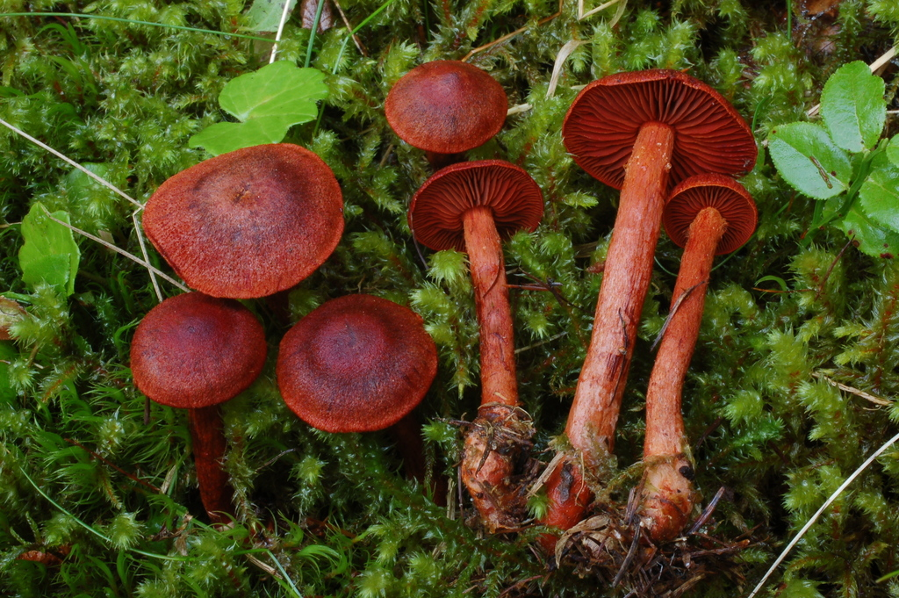
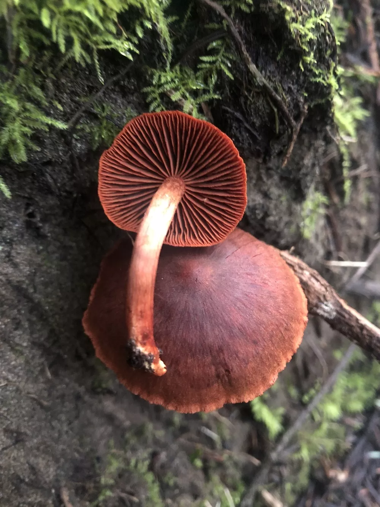
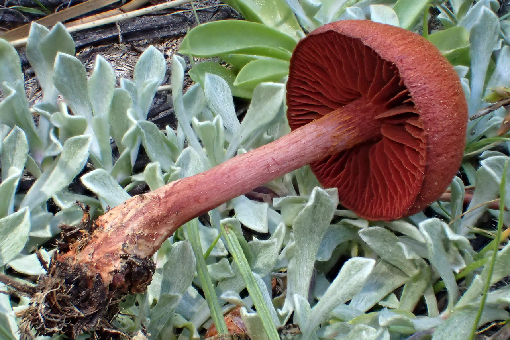

About
Cortinarius neosanguineus is a small, blood-red to purplish-red mushroom found in the Pacific Northwest of North America, growing in association with conifers like spruce and fir. It belongs to the large genus Cortinarius and is characterized by a red, often fibrillose cap, a red stem, and blood-red gills that turn brownish as the rust-colored spores mature. The mushroom is considered potentially poisonous due to the presence of toxins like orellanine found in some related Cortinarius species.
Ecology
Mycorrhizal with conifers—primarily spruces but also with firs, eastern hemlock, and northern white-cedar; growing alone, scattered, or gregariously; summer and fall; originally described from Austria; fairly widely distributed in northern and montane Europe; in North America known from boreal and sub-boreal ecosystems from Michigan to Newfoundland and New Jersey. The illustrated and described collection is from New Jersey.
Cap
1.5–4.5 cm; convex or bell-shaped at first, becoming broadly bell-shaped, convex, or nearly flat; dry; silky to finely hairy; bright, dark red; the margin not lined.
Gills
Broadly attached to the stem; close; colored like the cap, becoming cinnamon to rusty red in color. short-gills frequent; when young covered by a red cortina.
Stem
3–6 cm long; 2–4 mm thick; more or less equal; dry; silky; colored like the cap; sometimes with a rusty ring zone; basal mycelium reddish.
  